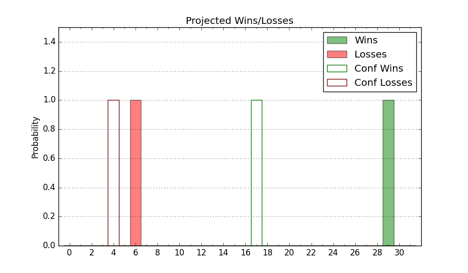

| Home | Game Probabilities | Conferences | Preseason Predictions | Odds Charts | NCAA Tournament |
| City: | Charlottesville, Virginia | |
| Conference: | ACC (9th)
| |
| Record: | 8-12 (Conf) 15-16 (Overall) | |
| Ratings: | Comp.: 6.4 (102nd) Net: 6.4 (102nd) Off: 110.6 (103rd) Def: 104.2 (132nd) SoR: 0.0 (109th) |
| Remaining | ||||||
|---|---|---|---|---|---|---|
| Date | Opponent | Win Prob | Pred. | |||
| 3/12 | (N) Georgia Tech (105) | 50.6% | W 66-65 | |||
| Previous | Game Score | |||||
| Date | Opponent | Win Prob | Result | Off | Def | Net |
| 11/6 | Campbell (224) | 85.4% | W 65-56 | 2.5 | -1.1 | 1.4 |
| 11/11 | Coppin St. (361) | 98.3% | W 62-45 | -23.6 | 10.4 | -13.3 |
| 11/15 | (N) Villanova (48) | 22.5% | W 70-60 | 6.3 | 26.2 | 32.4 |
| 11/21 | (N) Tennessee (6) | 5.8% | L 42-64 | -23.4 | 15.8 | -7.6 |
| 11/22 | (N) St. John's (24) | 13.8% | L 55-80 | -4.3 | -20.8 | -25.1 |
| 11/26 | Manhattan (262) | 89.5% | W 74-65 | -2.2 | -5.2 | -7.5 |
| 11/29 | Holy Cross (314) | 93.8% | W 67-41 | -10.3 | 25.3 | 15.0 |
| 12/4 | @Florida (4) | 2.8% | L 69-87 | 16.9 | -7.4 | 9.5 |
| 12/7 | @SMU (43) | 12.3% | L 51-63 | -19.5 | 18.0 | -1.5 |
| 12/12 | Bethune Cookman (274) | 91.0% | W 59-41 | -10.9 | 23.6 | 12.7 |
| 12/18 | Memphis (55) | 38.6% | L 62-64 | -5.7 | 7.8 | 2.0 |
| 12/22 | American (249) | 88.6% | W 63-58 | -9.0 | -3.4 | -12.5 |
| 12/31 | North Carolina St. (114) | 67.4% | W 70-67 | 12.2 | -7.9 | 4.3 |
| 1/4 | Louisville (21) | 21.8% | L 50-70 | -18.2 | -6.8 | -25.0 |
| 1/8 | @California (109) | 36.1% | L 61-75 | -13.6 | -4.4 | -17.9 |
| 1/11 | @Stanford (85) | 26.8% | L 65-88 | 8.8 | -32.2 | -23.3 |
| 1/15 | SMU (43) | 32.4% | L 52-54 | -21.9 | 23.9 | 2.0 |
| 1/18 | @Louisville (21) | 7.6% | L 67-81 | 2.1 | 2.2 | 4.3 |
| 1/21 | Boston College (196) | 82.1% | W 74-56 | 10.5 | 10.9 | 21.4 |
| 1/25 | Notre Dame (89) | 57.2% | L 59-74 | -9.5 | -20.0 | -29.5 |
| 1/29 | @Miami FL (187) | 56.4% | W 82-71 | 25.4 | -4.9 | 20.5 |
| 2/1 | Virginia Tech (151) | 75.8% | L 74-75 | 10.6 | -25.5 | -14.9 |
| 2/3 | @Pittsburgh (51) | 14.5% | W 73-57 | 25.2 | 21.2 | 46.3 |
| 2/8 | Georgia Tech (105) | 65.4% | W 75-61 | 20.9 | -2.0 | 19.0 |
| 2/15 | @Virginia Tech (151) | 47.9% | W 73-70 | 16.3 | -8.2 | 8.1 |
| 2/17 | Duke (1) | 4.5% | L 62-80 | 6.3 | -10.5 | -4.1 |
| 2/22 | @North Carolina (37) | 11.2% | L 66-81 | 1.4 | -3.7 | -2.3 |
| 2/26 | @Wake Forest (71) | 21.6% | W 83-75 | 29.6 | -2.6 | 26.9 |
| 3/1 | Clemson (25) | 23.1% | L 58-71 | -7.8 | -1.7 | -9.5 |
| 3/4 | Florida St. (78) | 52.9% | W 60-57 | -7.4 | 6.5 | -0.9 |
| 3/8 | @Syracuse (122) | 40.3% | L 70-84 | -1.1 | -17.3 | -18.4 |
| Stats & Trends | |||||
|---|---|---|---|---|---|
| Current | Day | Week | Month | Season | |
| Composite | 6.4 | +0.0 | -0.8 | +0.6 | -1.5 |
| Comp Rank | 102 | -2 | -2 | +5 | -9 |
| Net Efficiency | 6.4 | +0.0 | -0.8 | +0.6 | -- |
| Net Rank | 102 | -2 | -2 | +7 | -- |
| Off Efficiency | 110.6 | +0.0 | -0.2 | +2.9 | -- |
| Off Rank | 103 | -- | -6 | +37 | -- |
| Def Efficiency | 104.2 | +0.0 | -0.6 | -2.3 | -- |
| Def Rank | 132 | -- | -11 | -24 | -- |
| SoS Rank | 64 | -- | -2 | -4 | -- |
| Exp. Wins | 15.0 | -- | -0.0 | +1.2 | -0.0 |
| Exp. Conf Wins | 8.0 | -- | -0.0 | +1.2 | +0.1 |
| Conf Champ Prob | 0.0 | -- | -- | -- | -0.5 |

| Advanced Stats | ||
|---|---|---|
| Stat | Value | Rank |
| Off Eff FG % | 0.554 | 59 |
| Off Ast Ratio | 0.190 | 17 |
| Off ORB% | 0.240 | 302 |
| Off TO Rate | 0.142 | 136 |
| Off FT Ratio | 0.298 | 275 |
| Def Eff FG % | 0.487 | 93 |
| Def Ast Ratio | 0.137 | 99 |
| Def ORB% | 0.263 | 88 |
| Def TO Rate | 0.139 | 242 |
| Def FT Ratio | 0.269 | 46 |